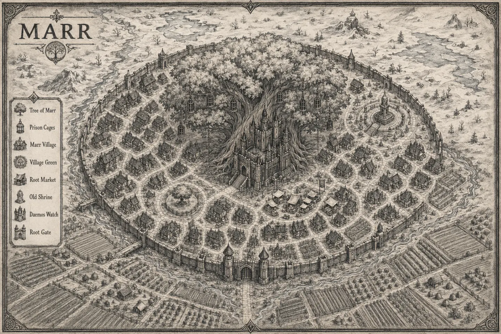

A village beneath the wounded boughs

This edition contains only things a traveler can see, buy, hear, learn openly, or face directly. No referee notes, hidden motives, secret doors, unrevealed solutions, or campaign truths are stored in these files.
Travel through Marr Proper, UndaMarr, the living Roots, and the Surface. The Atlas Index cross-references public places, people, wares, factions, routes, and rumors. Campaign status moves from Unknown to Rumored, Discovered, Visited, and Changed on this device.
Install the atlas on a phone for offline use. Every map, route, field entry, posted ware, and Cairn 2e profile remains available when the road has no signal.
“Cairn” is the work of Yochai Gal and is not affiliated with this atlas.
Original Marr material. Cairn 2e compatibility text released under CC BY-SA 4.0.
Discovery marks are stored only on this device. Download a backup before changing browsers, clearing site data, or moving the atlas to another address.
This atlas needs JavaScript enabled to open its marked locations.